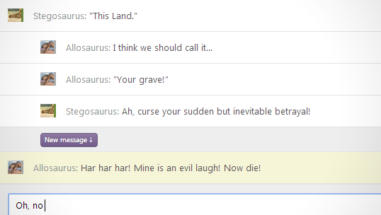
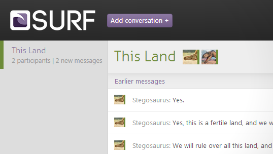

Remember Google Wave?
We loved it for its threaded, multi-level messages, and hated it for the bloated UI, useless gadgets, slowness and occasional crashing. We kept the good features and thrown out the useless ones.
Stick to the point
Conversations are not linear. People change the subject all the time. SURF lets conversations branch off, so you can easily keep track of everything.

Cross-platform
SURF is designed to look and feel awesome in all current browsers.
Free
SURF is open-source, so you can run your own chat server and use it with your friends or at the office. Feel free to download or fork it from GitHub!
